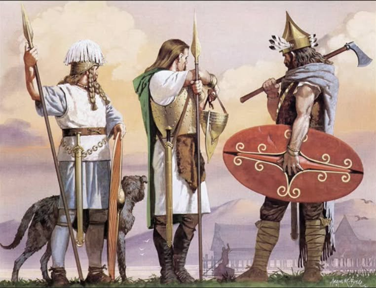
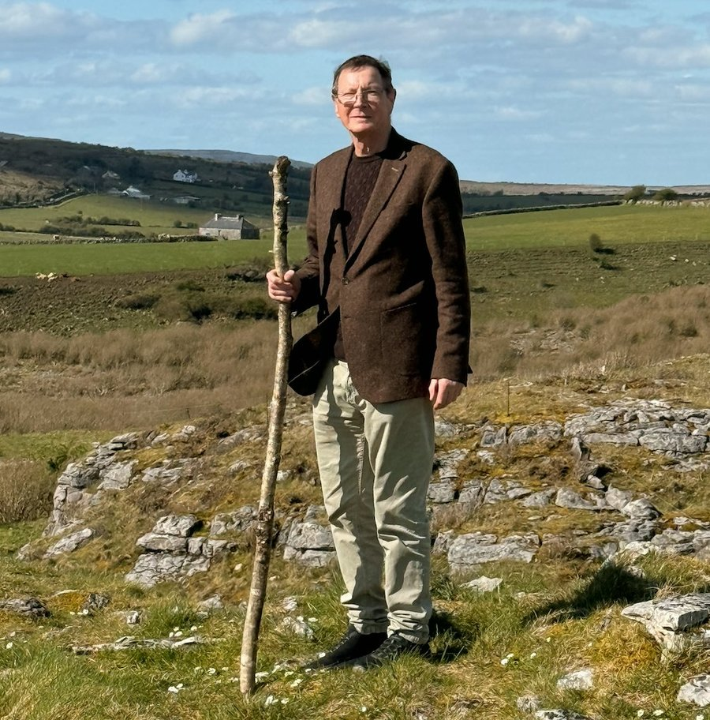
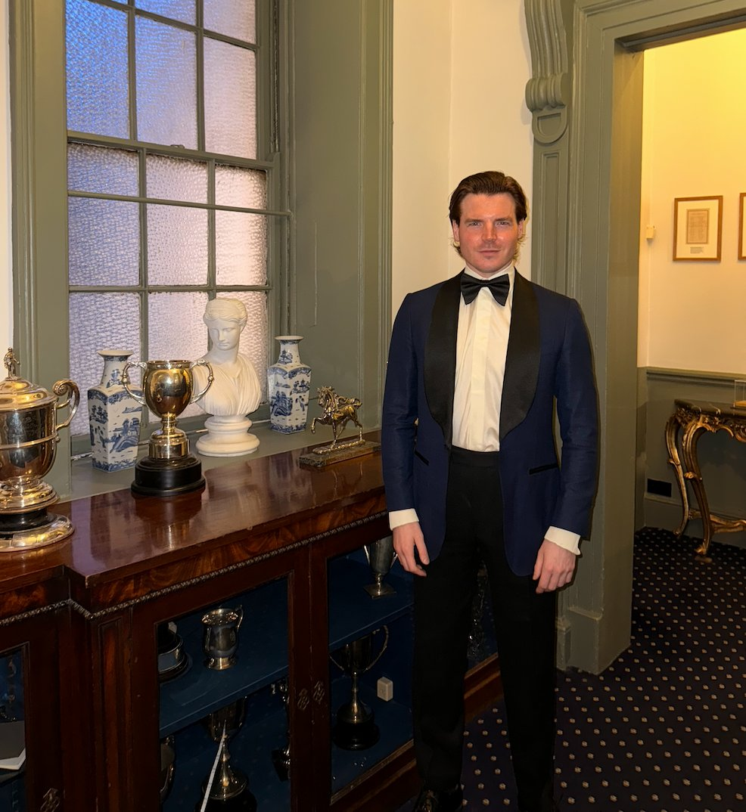
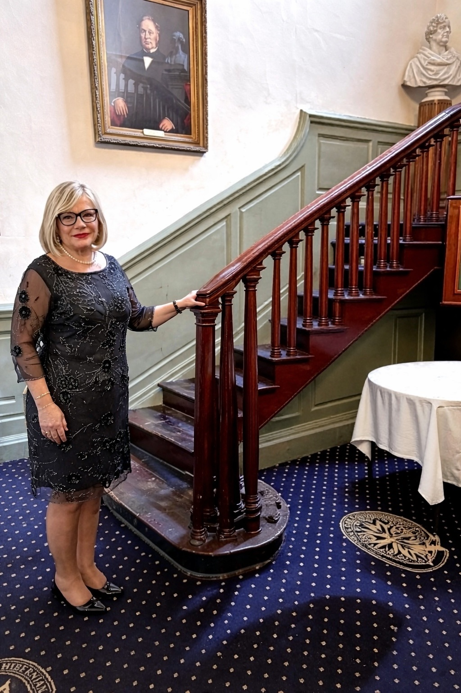
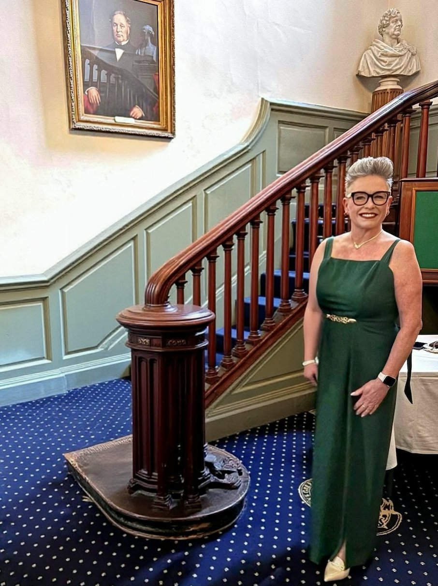
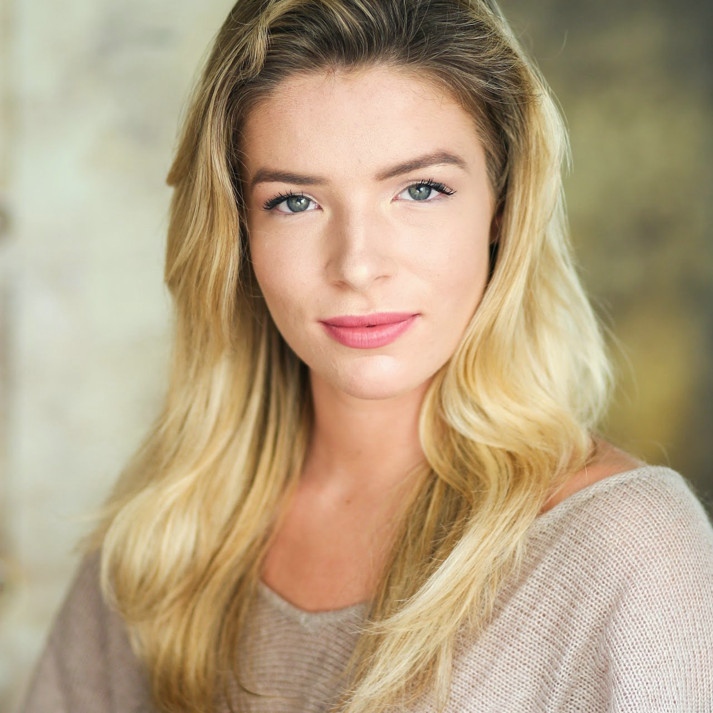
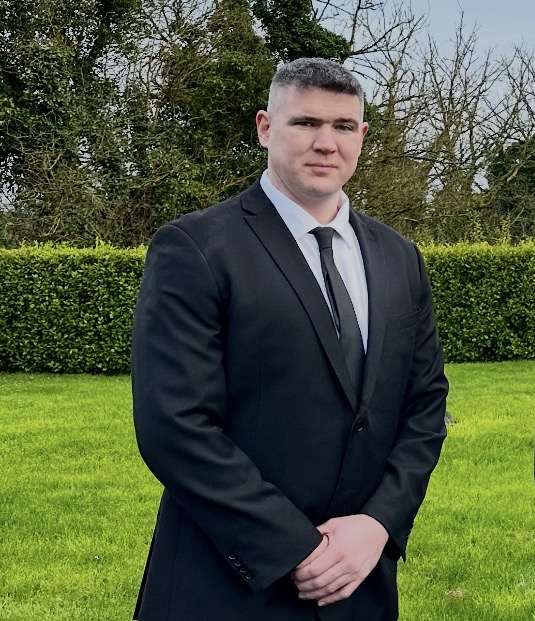
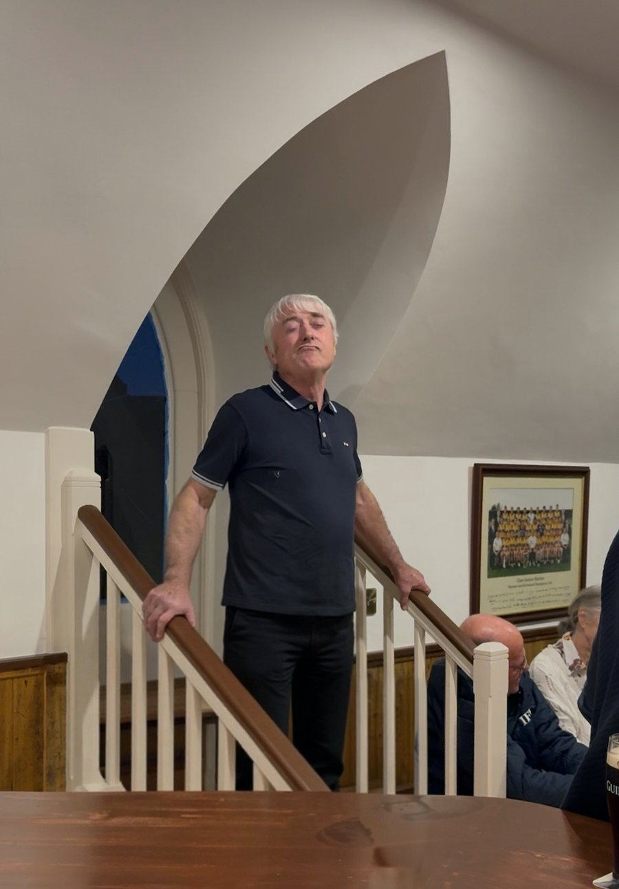
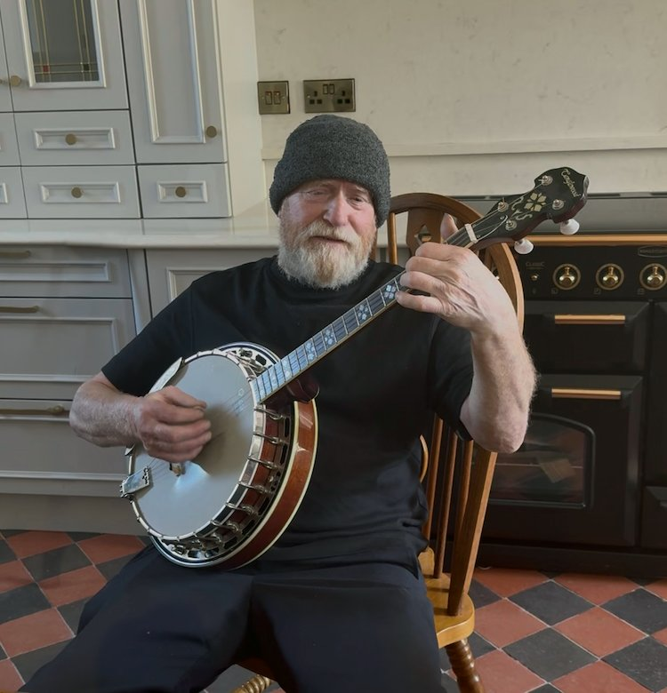

🎁 Buying this as a gift? Give the gift of belonging to an ancient Irish clan — signed by the Chief, posted worldwide.
Comhairle Rúnda Chlan Uí Chomáin
"The title of Chief is owned by the derbhfine — the clan members — and not in any personal capacity. The appointment is for life and at the death of the Chief, it is the derbhfine that will determine who is most able to lead the clan. The next Chief is not defined in advance — the Tánaiste is the heir designate, but it is the clan members who will decide, not primogeniture."

The Privy Council of Clan Ó Comáin is constituted in accordance with the spirit of Brehon law — the ancient legal system of Gaelic Ireland under which all clans were governed from the earliest recorded period until the Tudor conquest. Under Brehon law, the clan chief did not rule alone but in council with the senior members of the derbhfine — traditionally this was the extended family group of those sharing a common great-grandfather. In our case, it's the clan's senior members and elders.
The Taoiseach (chief) serves for life from among those qualified by lineage and ability, and serves alongside a council of officers each carrying specific responsibilities for the clan's affairs — its lands, law, learning, spiritual welfare and external relations. This collegial model of governance is the basis on which Clan Ó Comáin's Privy Council is formed.
The revival of Clan Ó Comáin in 2025, recognised by Clans of Ireland under the patronage of the President of Ireland, is led by Fergus Commane as Taoiseach — consecrated by derbhfine under Brehon succession — with a Privy Council being constituted from among the clan's senior members and officers worldwide. Positions marked as open are available to qualified clan members. Those interested in serving are invited to contact the Chief directly at clan@ocomain.org.
The Tánaiste will be considered for his abilities and lifework, though the decision rests with the assembled derbhfine in accordance with the ancient Brehon tradition of selecting the most able-bodied Chief, not merely the nearest in blood.

Fergus serves as Chief for life. Consecrated by derbhfine under Brehon law as the Taoiseach successor. The Chief leads the clan, holds its seat at Newhall House, County Clare, and is custodian of Killone Abbey and the Holy Well of St John the Baptist. He is the ultimate authority in clan affairs and signatory of all formal clan instruments.

The Chief's son serves as heir designate under the Brehon tradition of tanistry — not primogeniture. This does not guarantee succession. When the Chief dies, it is the clan members who will select the next Chief. Antoin's abilities, character and lifetime contributions to the clan will weigh heavily in that decision, but the choice rests with the assembled clan, not with any individual. Antoin represents the clan at official functions, including the 2026 Clans of Ireland gathering in Dublin, and advises the Chief and deputises in his absence.
The Viceroy serves as Chief Executive of the clan — the operational leader and advisor to the Chief and Tánaiste. Uniquely among council positions, the Viceroy is nominated and elected by clan members, reflecting the Brehon principle that leadership must command the confidence of the assembled clan.

The Chancellor manages correspondence, formal records, and membership information on behalf of the clan, and is the senior office of the Chief's household. The role is held by Maria Kinfauns.

Among the senior offices of the Chief's household — ranking immediately after the Chancellor — the Private Secretary to The Commane is the principal channel between the Chief and the wider world. The office drafts formal correspondence on behalf of the Chief, oversees the Register of Members, manages the diary of clan engagements, and serves as the formal point of contact for all matters addressed to the Chief. As in any noble household, direct access to the Chief is reserved — the Private Secretary's office is the door through which it is sought.

The Keeper of the Seat is responsible for events, historical tours and clan gatherings — organising the clan's revival festivals and maintaining the living connection between the clan community and its ancestral seat in County Clare.

The chief's personal guard and protector of the clan and their seat of authority. Represents the clan at events by carrying our banner and ceremonial sword. Michael Commane serves the clan from Cape Cod, Massachusetts, carrying the standard of Clan Ó Comáin in the United States.

In the Gaelic tradition, the Seanchaí was the keeper of memory — preserving and recalling stories, laws and traditions through the spoken word. Paddy Commane, of Ballymacooda carries this ancient office, performing at ceremonies and gatherings and ensuring the living history of the clan is never lost.

The Clan Bard composes songs and poems honouring the clan, reinforcing cultural identity through music. Performing at ceremonies and gatherings, the Bard carries forward the ancient bardic tradition of the Gaelic household — keeping the spirit of the clan alive through verse, melody and song.
In the Gaelic tradition, the chief's household included a chaplain providing spiritual counsel and officiating at clan ceremonies. The clan's spiritual patrons — Saint Commán of Roscommon and the Holy Well of St John the Baptist at Newhall — make this a particularly resonant appointment for Clan Ó Comáin.
In the oldest Irish tradition, the anam cara — literally "soul friend" — was the trusted companion with whom one could share the deepest troubles of the heart, and be met with wisdom, discretion, and steady care. The Anam Cara to Clan Ó Comáin offers a confidential, listening presence to members navigating grief, loss, isolation, questions of identity, or the quiet weight of being far from home. The role is pastoral, not clinical — it complements rather than replaces professional mental-health care, and the office will always direct members to qualified support where it is needed. We seek someone with training in counselling, pastoral care, or psychotherapy, and a genuine feel for the Celtic tradition this office revives.
In the medieval Gaelic clan, the ollamh leighis was one of the seven great learned offices — the hereditary physician to the chief and his people, drawn from scholarly medical families such as the Ó hÍceadha of Thomond, whose standing rested on long study of herbal, dietary, and contemplative traditions. The Ollamh Leighis of Clan Ó Comáin offers members a trusted voice on general health and preventive wellbeing, and a steady pointer toward the appropriate professional care when it is needed. The role is not a substitute for a doctor, and no diagnosis or treatment is provided through it — it is a relationship of counsel that honours the ancient place of the physician within the clan. We seek a qualified medical practitioner willing to offer some of their time to this office.
In the old Gaelic polity, the craoibhscríobhaí (pronounced roughly kreev-skree-vee) — literally "branch-writer" — was the scribe who kept the clan's pedigree: the written record of descent traced through the generations back to the common ancestor. A chiefdom rested on its documented lineage, and the office was held in high esteem. The Craoibhscríobhaí of Clan Ó Comáin continues this ancient work with modern tools: maintaining and extending the clan pedigree, assisting members researching their family trees, coordinating Y-DNA testing (including Big-Y 700) through the clan's surname project at FamilyTreeDNA, and interpreting results within the R-L21 / Irish Type III context that anchors the male-line Ó Comáin inheritance. Members seeking to establish or explore their connection to the clan bloodline are welcomed to correspond with this office. We seek a genealogist or serious family-history researcher — familiarity with Y-DNA tools and Irish records (Civil Registration, Tithe Applotment, Griffith's Valuation, church registers) is desirable.
The Chronicler of Legends crafts and shares the clan's stories — developing characters and storylines from the clan's history, creating AI-driven films and media around these characters to be shared on social media, and contributing to written works that inspire people to join and engage with Clan Ó Comáin.
The Clan Herald is responsible for heraldic matters — the proper use and display of the clan's arms, managing applications from members wishing to use the crest, and liaison with the Office of the Chief Herald of Ireland. A knowledge of Irish heraldry is desirable.
The Gaelic Officer serves as the clan's advisor on Gaelic traditions and the Irish language. A speaker at events and Master of Ceremonies, the Gaelic Officer ensures that the ancient tongue and customs of the Ó Comáin are honoured at all formal clan occasions.
Clan Ambassadors represent Clan Ó Comáin in specific countries or regions of the diaspora — particularly Irish-American communities in the United States. Ambassadors promote the clan, welcome new members, organise local gatherings, and serve as the Chief's representative in their territory.
Develops cultural programs and promotes Irish traditions. Preserves documents, photographs, and clan memorabilia — maintaining the physical and digital archive that records the living history of Clan Ó Comáin for future generations.
Connects members across the world and builds international links — fostering a sense of belonging among the scattered branches of the clan members from Ireland to America, Australia and beyond.
Manages communications on behalf of the clan, including social media and newsletters — shaping the public voice of Clan Ó Comáin and ensuring the clan's story reaches the widest possible audience.
Welcomes and supports new members — the first point of contact for those joining the clan, ensuring every new member feels at home within the community of Clan Ó Comáin from the moment they arrive.
The Privy Council of Clan Ó Comáin is being constituted. All council positions are honorary clan offices, held in service to the clan rather than as employment. If you are a clan member — or wish to become one — and feel you have the skills, commitment and passion to serve in one of the open positions, the Chief invites you to write to him directly with a brief account of your interest and background.